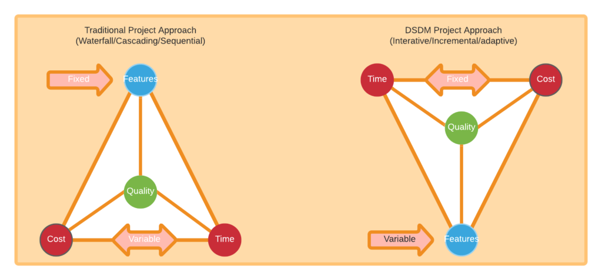

Materiais Educativos
Veja alguns vídeos e artigos importantes para sua introdução ao DSDM abaixo.
O que é?
Como funciona e por quê utilizar?
Na gestão tradicional de projetos, o escopo é fixo, enquanto prazo e custo variam. Quando há atrasos, adicionam-se recursos e estende-se o prazo, o que pode piorar ainda mais o atraso. Isso compromete prazos e credibilidade, e, sob pressão, a qualidade costuma ser sacrificada com cortes em testes e controles.
Já no DSDM, prazo, custo e qualidade são definidos na fase de Fundamentos, e a contingência é gerenciada pela flexibilidade nos requisitos. Requisitos de menor prioridade podem ser descartados ou adiados conforme necessário, com o acordo das partes interessadas e baseados nas prioridades MoSCoW.